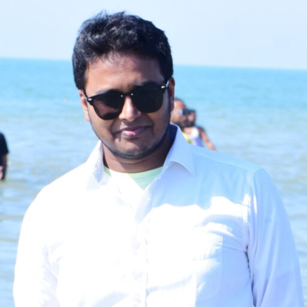

Read the signal
Combine images, audio, optical measurements, wearables, and environmental sensing to capture what a single source can miss.
Assistant Professor · Computing · Trust · Real-world signals
I am an Assistant Professor in the School of Computing at Georgia Southern University. My research connects artificial intelligence, cybersecurity, and computational sensing to help systems interpret uncertain signals, verify what they see, and support better decisions.
A shared research question
Across media, health, security, and agriculture, the work follows a common path: understand the signal, account for its context, and make the resulting decision easier to trust.
Combine images, audio, optical measurements, wearables, and environmental sensing to capture what a single source can miss.
Study uncertainty, distribution shifts, adversarial behavior, and the conditions that affect how evidence should be interpreted.
Design explainable models and human-centered tools for settings where reliability carries real consequences.
Research directions
The projects bring together machine learning, computer vision, sensing, and security around questions with practical stakes.
Multimodal methods for detecting synthetic media, checking audio–visual synchronization, and studying how authenticity signals behave under change.
Security research spanning access control, federated learning, AI red-teaming, and agentic support for identifying and responding to fraud.
Modeling optical and wearable measurements to investigate non-invasive metabolic screening, multimodal health data, and future quantum sensing.
Fusing UAV imagery, thermal sensing, and IoT measurements to support soil assessment and more precise irrigation decisions.
Selected work
A sample of active and developing work. Each project is labeled by stage so the visitor can distinguish simulation, prototype, and research-in-progress.
A simulation workflow models tissue and glucose spectra, three band-pass channels, detector correction, calibration, and measurement uncertainty.
Earlier Phase 1 controlled simulation only. These are workflow-consistency results, not measured device or clinical accuracy.
The COMSOL model represents full-spectrum tissue and glucose responses, band-pass weighting, APD/photodiode surrogate signals, repeated noisy measurements, quadratic calibration, and limit-of-detection analysis. Validation with solutions and tissue phantoms is planned as a separate stage.
A dataset and evaluation direction centered on a focused question: how reliably can models identify manipulation when visual and audio timing no longer agree?
The work examines timing relationships as evidence for authenticity and aims to make the benchmark useful for comparing detection methods under controlled synchronization changes. Dataset design and validation are ongoing.
A multimodal fraud prevention concept connects real-time risk detection with clear, user-centered guidance to help people pause and evaluate suspicious interactions.
The prototype explores how detection, risk assessment, and agentic intervention can work together. Planned evaluation includes a structured comparison of intervention approaches with older adults.
A dual-stream vision model combines UAV RGB and thermal imagery with IoT soil measurements to estimate moisture and nitrogen across a field.
Cross-modal attention links visible and thermal patterns, while field sensors and laboratory measurements support local estimation. The aim is to translate these estimates into spatially informed irrigation and nutrient decisions.
Research stages and descriptions reflect the current portfolio. Simulation results are explicitly identified as such; project pages and publication records provide the latest updates.
About
I am an Assistant Professor in the School of Computing at Georgia Southern University, where I joined in 2025. I earned a Ph.D. in Computational Science (major: Computer Science) from the University of Southern Mississippi in 2021.
My academic work spans faculty, teaching, and research appointments at universities in the United States and Bangladesh. Before academia, I worked in software engineering and team leadership. That applied background shapes how I approach mentoring, collaboration, and research that connects technical questions with real settings.
My research brings machine learning and computational methods to problems in media authenticity, cyber defense, health sensing, and agriculture. I am especially interested in how systems behave when data are noisy, conditions shift, or people need a clear reason to trust the output.
Career history
Appointments in higher education and software engineering across the United States and Bangladesh.

Georgia Southern University
Aug 2025 – Present
University of Massachusetts Dartmouth
Jan 2025 – Aug 2025
Florida Gulf Coast University
Aug 2023 – Jan 2025
University of Alabama at Birmingham
Jun 2022 – May 2023
Northern Kentucky University
Aug 2021 – May 2022
The University of Southern Mississippi
Aug 2017 – Aug 2021

Daffodil International University
Sep 2016 – Jul 2017
Daffodil International University
Jan 2014 – Aug 2016
Orion Informatics Limited
Dec 2015 – Sep 2016
BRAC IT Services Limited
May 2014 – Nov 2015
Sarah Technologies Limited
May 2011 – Apr 2014
Teaching & mentoring
I teach and mentor across core computing and applied AI, helping students connect technical foundations to responsible systems design. Recent courses include AI in Real-Time Cybersecurity, Network Security, and Fundamentals of Information Systems Security.
Doctoral mentorship
Doctoral researchers in Applied Computing at Georgia Southern University.

Research spans blockchain and software-defined networking for secure IoT, alongside privacy-preserving AI for healthcare.
Research interests include computer vision, machine learning, quantum computing, and healthcare data analytics.
Connect
For research collaboration, invited talks, student research opportunities, and academic inquiries, please get in touch.